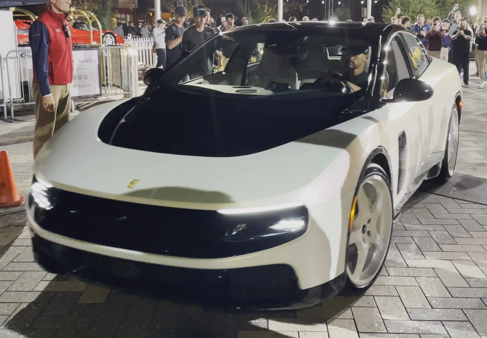
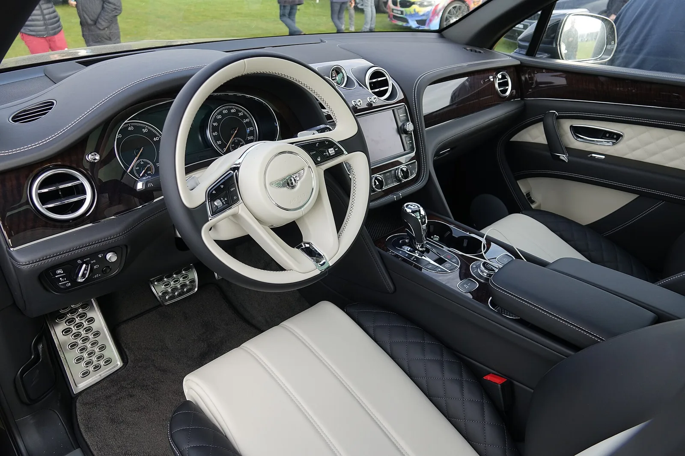

▲ 페라리 브랜드 최초의 순수 전기차 '루체'. 4도어 5인승 패스트백 구조에 122kWh 배터리를 얹었다 ⓒ Wikimedia Commons
같은 질문에 정반대의 답을 내놨다. "브랜드 첫 순수전기차를 어떻게 만들 것인가"라는 물음에 페라리와 벤틀리는 전혀 다른 길을 골랐다. 오토헤럴드는 이를 '공수전환'이라는 표현으로 요약했다. 페라리는 항속거리 530km에 가격을 극단으로 밀어올렸고, 벤틀리는 600km를 확보하면서도 상대적으로 접근 가능한 가격대를 택했다.
두 차는 지난 몇 달 사이 각각 별도 기사로 다룬 바 있다. 이번 기사는 개별 신차 소식이 아니라, 두 울트라럭셔리 브랜드가 전동화를 대하는 방식 자체의 차이에 집중한다.
1. 숫자로 보는 정면 대결 — 530km 루체 vs 600km 토르칼
두 차는 공개 시점도, 차급도, 지향점도 다르지만 '브랜드 최초의 순수전기차'라는 타이틀만은 같다. 페라리 루체는 2026년 5월 25일 이탈리아 로마에서, 벤틀리 토르칼은 그로부터 넉 달 뒤인 9월 24일 영국 런던에서 세계 최초 공개됐다. 오토헤럴드가 정리한 제원을 나란히 놓고 보면 두 브랜드의 셈법이 얼마나 다른지 드러난다.
| 항목 | 페라리 루체 | 벤틀리 토르칼(S) |
|---|---|---|
| 차체 형태 | 4도어 5인승 패스트백 (첫 5인승 페라리) | 도심형 SUV |
| 배터리 용량 | 122kWh (SK온 파우치셀) | 113kWh (800V, 192셀 파우치형) |
| 주행거리(WLTP) | 530km 이상 | 최대 600km |
| 구동 방식 | 4모터(바퀴별 독립 제어) | 듀얼모터 AWD |
| 최고출력 | 1050마력(772kW) | 888마력, 1350Nm |
| 0-100km/h | 2.5초 | 2.9초 |
| 최고속도 | 310km/h 이상 | 260km/h |
| 최대 충전속도 | 350kW급(10~80% 25분 이내) | 400kW급(10~80% 약 16분) |
| 공개 시점 | 2026년 5월 25일, 이탈리아 로마 | 2026년 9월 24일, 영국 런던 |
| 가격 | 55만 유로(약 8억 3000만 원)~ | 17만 3000파운드(약 3억 1000만 원)~ |
📍 항속거리는 벤틀리, 순발력은 페라리
배터리 용량은 루체가 9kWh 더 크지만, 실제 WLTP 항속거리는 토르칼이 오히려 70km 더 길다. SUV보다 공력·중량 면에서 불리할 수 있는 차체임에도 배터리 효율과 회생제동 세팅에서 앞선 결과로 풀이된다. 반면 가속성능과 최고속도는 4모터 시스템을 얹은 루체가 압도적이다. 두 회사가 '전기차에서 무엇을 우선할 것인가'를 서로 다르게 판단했다는 뜻이다.

▲ 2026년 몬터레이 카 위크에 전시된 페라리 루체. 매끄러운 4도어 패스트백 실루엣이 특징이다 ⓒ Wikimedia Commons
2. "전기라서 가능한 페라리" vs "전기라도 변하지 않는 벤틀리"
같은 '전동화'라는 단어를 두고 두 회사가 그린 그림은 정반대다. 페라리는 루체를 만들며 내연기관 시대의 공식을 의도적으로 벗어났다. 애플 전 디자인 총괄 조너선 아이브가 이끄는 디자인 스튜디오 러브프롬(LoveFrom)과 손잡고 브랜드 최초의 5인승 4도어 차체를 택했고, 바퀴마다 모터를 따로 두는 4모터 독립 제어로 60건 이상의 신규 특허를 출원했다. "전기차이기 때문에 가능해진 새로운 페라리"를 만들겠다는 접근이다.
벤틀리는 반대로 움직였다. 토르칼 공개 당시 벤틀리 CEO는 "고객들은 단지 전기차라는 이유로 완전히 다른 차를 원하지 않는다"고 밝혔다. 긴 보닛과 강한 리어 펜더 비례, 천연 소재 마감, 물리 버튼, V8 엔진음에서 영감을 받은 사운드 등 107년 브랜드 경험을 동력원만 바꿔 그대로 잇는 방향을 택한 것이다. 토르칼의 상세 디자인·생산 스토리는 별도 기사에서 다뤘다.
벤틀리 토르칼 공개 당시 상세 제원과 크루 공장 생산 이야기는 기존 기사에서 확인할 수 있다. 벤틀리 토르칼 세계 최초 공개 기사 바로가기

▲ 벤틀리는 토르칼에서도 벤테이가(사진)로 이어져 온 벤틀리 특유의 비례와 디자인 언어를 유지했다 ⓒ Wikimedia Commons (참고 이미지, 토르칼 실차 아님)
3. 타겟 고객층 — '초고가 한정판' 페라리, '신규 고객 유입' 벤틀리
가격 전략의 차이는 결국 노리는 고객층이 다르다는 뜻이다. 페라리 루체는 55만 유로라는 가격 자체가 필터 역할을 한다. 페라리 CEO는 이 가격을 두고 논란이 일자 직접 방어에 나섰는데, 이는 루체를 기존 페라리 고객 — 성능과 희소성을 최우선으로 여기는 스포츠카 애호가층 — 을 벗어나지 않는 선에서 판매하겠다는 신호로 해석된다.
벤틀리는 정반대 셈법을 썼다. 토르칼 공개 당시 사전 계약 고객의 절반가량이 벤틀리를 처음 구매하는 신규 고객으로 파악됐다고 밝혔다. 17만 3000파운드라는 가격은 여전히 고가지만, 벤틀리 라인업 내에서는 진입 장벽이 낮은 축에 속한다. 초고가 한정판 대신 판매 볼륨을 통한 전동화 전환을 노리는 전략인 셈이다.
✅ 두 브랜드가 그리는 고객상
· 페라리 루체 — 기존 성능·희소성 지향 고객, 4도어 5인승이라는 새 포맷도 결국 "페라리를 더 자주 탈 수 있는 페라리"로 소비
· 벤틀리 토르칼 — 럭셔리 SUV 구매층 + 벤틀리 브랜드 첫 진입 고객, 장거리 GT 주행 감성과 실용성 동시 추구
· 두 회사 모두 내연기관·하이브리드 라인업은 그대로 유지하며 전기차는 선택지 확장으로 접근
4. 롤스로이스 스펙터까지 — 세 번째 해법
울트라럭셔리 전기차 시장을 두 브랜드만으로 설명할 수는 없다. 앞서 2023년 공개된 롤스로이스 스펙터는 또 다른 답을 제시한 바 있다. 최고출력 601마력(블랙 배지 사양 680마력), WLTP 기준 최대 628km 주행거리를 갖췄으며, 국내 가격은 약 6억 2200만 원부터 시작한다.
| 모델 | 최고출력 | 주행거리(WLTP) | 가격대 |
|---|---|---|---|
| 페라리 루체 | 1050마력 | 530km 이상 | 약 8억 3000만 원~ (해외) |
| 벤틀리 토르칼 S | 888마력 | 최대 600km | 약 3억 1000만 원~ (영국) |
| 롤스로이스 스펙터 | 601~680마력 | 최대 628km | 약 6억 2200만 원~ (국내) |
📍 롤스로이스의 노선 — "전기라서가 아니라, 더 롤스로이스답기 위해"
롤스로이스는 스펙터를 소개하며 "전기차라서 만든 것이 아니라, 롤스로이스를 더 롤스로이스답게 만들기 위해 전기를 선택했다"고 설명했다. 정숙성과 묵직한 토크감을 앞세우는 이 접근은 벤틀리의 "변하지 않는 브랜드 경험" 노선과 방향이 비슷하지만, 가격대는 페라리와 벤틀리 사이 중간 지점에 자리한다. 세 브랜드를 나란히 놓으면 울트라럭셔리 전동화에 정답이 하나가 아니라는 점이 더 뚜렷해진다.

▲ 벤틀리는 전기차에서도 수작업 가죽·목재 마감을 그대로 계승했다(벤테이가 실내 참고사진) ⓒ Wikimedia Commons (참고 이미지, 토르칼 실차 아님)
5. 이 두 해법이 시장에 던지는 시사점
페라리와 벤틀리의 상반된 선택은 럭셔리카 업계 전반의 고민을 압축해서 보여준다. 전동화는 이제 피할 수 없는 흐름이지만, 그 흐름을 브랜드 정체성과 어떻게 연결할지에 대한 정답은 하나가 아니다.
✅ 두 해법이 남긴 시사점
· 희소성 유지형(페라리) — 가격을 높여 기존 고객층을 그대로 유지하고, 전동화를 신기술 과시의 장으로 활용
· 고객 확장형(벤틀리) — 상대적으로 접근 가능한 가격으로 신규 고객을 끌어들여 전동화 전환 물량을 확보
· 정체성 이식형(롤스로이스) — 브랜드 고유의 경험(정숙성·토크감)을 전기 파워트레인으로 그대로 옮기는 데 집중
· 세 회사 모두 내연기관·하이브리드 라인업은 당분간 병행 유지한다는 공통점도 있다
페라리 루체의 국내 공개 소식과 상세 제원은 별도 기사에서 다뤘다. 페라리 루체 한국 최초 공개 기사 바로가기
6. 요약
페라리 루체(122kWh, WLTP 530km, 1050마력, 55만 유로)와 벤틀리 토르칼(113kWh, WLTP 600km, 888마력, 17만 3000파운드)은 두 브랜드의 첫 순수전기차이면서도 정반대의 해법을 보여준다. 항속거리는 벤틀리가 앞서지만, 가속성능과 최고속도는 페라리가 압도적이다.
페라리는 "전기차이기 때문에 가능한 새로운 페라리"를 내세워 기존 고객층을 겨냥한 초고가 전략을, 벤틀리는 "동력원이 바뀌어도 변하지 않는 벤틀리다움"을 앞세워 신규 고객 확장 전략을 택했다. 사전 계약 고객의 절반이 벤틀리 첫 구매 고객이라는 점이 이를 뒷받침한다.
롤스로이스 스펙터까지 포함하면 울트라럭셔리 전기차 시장에는 최소 세 가지 서로 다른 해법이 공존한다. 전동화 시대에도 럭셔리 브랜드마다 지키려는 가치와 겨냥하는 고객이 다르다는 사실을 세 회사의 첫 전기차가 명확히 보여준 셈이다.